Managing Requirements for Fault-Tolerant Fuel Control System (IBM Rational DOORS)
The Requirements Management Interface (RMI) provides tools for creating and reviewing links between Simulink objects and requirements documents. This demo illustrates linking model objects to requirements stored in Telelogic DOORS. See the General RMI demo for more details on using RMI.
Contents
- Model Used in this Demo
- Basic Linking to DOORS Objects
- Link to Current Selection in DOORS
- Viewing and Navigating Links from Simulink to DOORS
- About Surrogate Modules and Synchronization
- Synchronizing your Simulink Model with a DOORS Database
- Using Model Advisor for RMI Consistency Checking
- Copying Link Information from Simulink to DOORS
- Copying Link Information from DOORS to Simulink
- Review your Changes Using User Tags
- Removing Links in Simulink and DOORS
- Optional Direct Links from DOORS to Simulink
Model Used in this Demo
For the purposes of this demo, an example model of a fault-tolerant fuel control system is included. Use it for the exercises presented below. Some steps will require modifications to the model. If you intend to save your results, create a writable copy of the model before you continue along this demo.
open_system('slvnvdemo_fuelsys_doorsreq');

Basic Linking to DOORS Objects
You can link a model object to requirements stored in a DOORS database (DOORS objects). You do not need to modify DOORS documents when creating links. To try this out with some temporary module in your DOORS database:
- Pick some basic block in the main diagram, for example, the Metered Fuel Scope. Right-click the block and select Requirements > Edit/Add Links. Link Settings dialog opens.
- Click New to create a new requirement.
- Select DOORS Item in the Document type drop-down box.
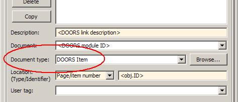
- Specify a unique target module ID in the Document input field or use the Browse button to select the target module in DOORS database.
- Enter target object ID in the Location Identifier field, or use the Document Index tab to select the target object in a chosen module.
- Click Apply or OK to store the new requirement link.
- Right-click the same object again to see the new link label listed in the top portion of the context menu for this object.
Link to Current Selection in DOORS
An easier way is to use selection-based linking via the Requirements option in context menus of Simulink and Stateflow objects that support requirements linking:
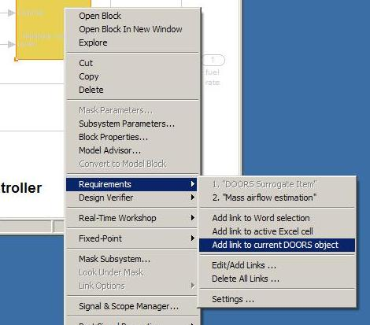
Links created via context menu shortcuts have the Description field set to the header of target object in DOORS. Try this out with some other object in the demo model, for example:
- Select any object in your test module in DOORS.
- Right-click throttle sensor and select Add link to current DOORS object in Requirements context menu to create a link.
- Right-click the throttle sensor again and locate the link label at the top of Requirements context menu to confirm that the link was added. You may use Edit/Add Links dialog later to adjust the description label or keywords.
The DOORS button in the Requirements dialog box provides a combined approach: use the button to automatically fill in all the input fields with the data from the current selected DOORS object, and then adjust as required before saving the changes. You can also use the DOORS button to change existing links to other objects in DOORS.
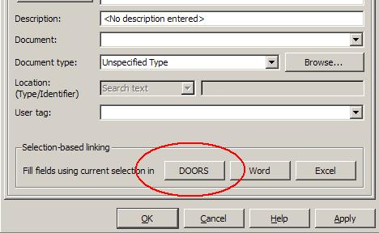
The default behavior of selection-based linking is to create a one-way link from Simulink to DOORS. DOORS documents remain unchanged. You can enable two-way linking by activating the Modify documents to insert links to models checkbox in the Selection Linking tab of the Requirements Settings dialog box as demonstrated in the last section of this demo.
Viewing and Navigating Links from Simulink to DOORS
You highlight and navigate DOORS links in the same way you do that with other types of links, see General RMI demo for details.
- Use Tools > Requirements > Highlight model to highlight all requirements in the demo model.
- Make sure DOORS is running and logged in.
- Right-click on one of the highlighted objects that you used to create new links in the previous section.
- Expand Requirements submenu. Labels of the links you created should be visible at the top.
- Click on the link label. Your test module opens in DOORS with the correct object selected.
Be careful to only try this with the links you created. There are other links in the model that will not work just yet. We will cover fixing those links in sections below.
rmi('highlightModel', 'slvnvdemo_fuelsys_doorsreq');
About Surrogate Modules and Synchronization
Surrogate module workflow is supported for DOORS to allow two-way linking without needing to modify DOORS requirements modules. The following picture illustrates the workflow.
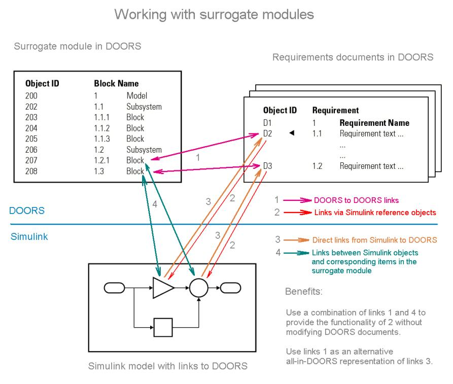
A new formal DOORS module, referred as a surrogate module, is automatically generated by Simulink to be used as a DOORS representation of the Simulink model. You can choose to map all the objects in your model, or only those with links to DOORS, or pick one of the intermediate options as discussed in the documentation.
You can create direct links to requirements in DOORS, as demonstrated in previous sections (marked 3 in the picture) and optional matching direct links from DOORS documents to Simulink objects, as demonstrated in the last section of this demo (marked 2 in the picture).
Additionally, with the surrogate module present in DOORS, you can establish links within DOORS between the items in surrogate modules and requirements stored in DOORS (marked 1 in the picture), while navigation to and from Simulink is provided by surrogate item links (marked 4 in the picture).
Surrogate module workflow provides the following advantages:
- Bi-directional linking is possible without the need to modify documents in DOORS or the models in Simulink. All required information is stored in the surrogate modules and corresponding link modules.
- You can manage and analyze links in the DOORS environment without necessarily running Simulink, including using the native reporting capabilities of DOORS.
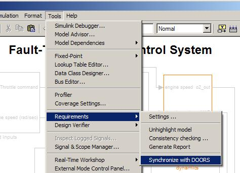
Below is an example screenshot of the autogenerated Surrogate module. Note that DOORS hierarchy mirrors the structure of the originating Simulink model, and DOORS object headers match Simulink object names:
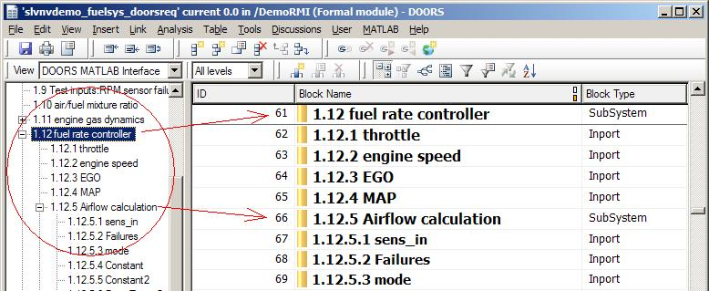
Synchronizing your Simulink Model with a DOORS Database
Normally, you would use Tools > Requirements > Synchronize with DOORS menu item to create a new DOORS surrogate module for your Simulink model.
For the purposes of this demo, an existing DOORS project is provided as an archive, including the surrogate module with links to other modules. To try out the interactive features of this demo, restore the project into your DOORS database, and then re-synchronize the demo model as explained below.
- Use the File > Restore feature in DOORS and point it to DemoRMI.dpa archive provided with your MATLAB installation under toolbox/slvnv/rmidemos/fuelsys_req_docs/. If your already have a project named DemoRMI in your DOORS database, DOORS appends a number to the project name. As shown in the screenshot below, the project includes one link module and three formal modules. One formal module is the DOORS surrogate for slvnvnvdemo_fuelsys_doorsreq model; the other two are example modules produced by importing Microsoft Word documents from General RMI demo.
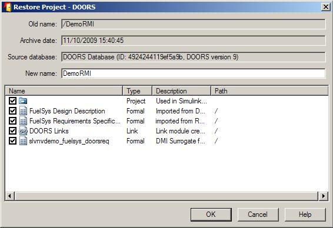
- Extract all the included modules and open the surrogate module.
- Note the red and orange link navigation triangles in two of the extracted modules. Right-click to navigate between modules. These links are preserved through the backup-restore procedure.
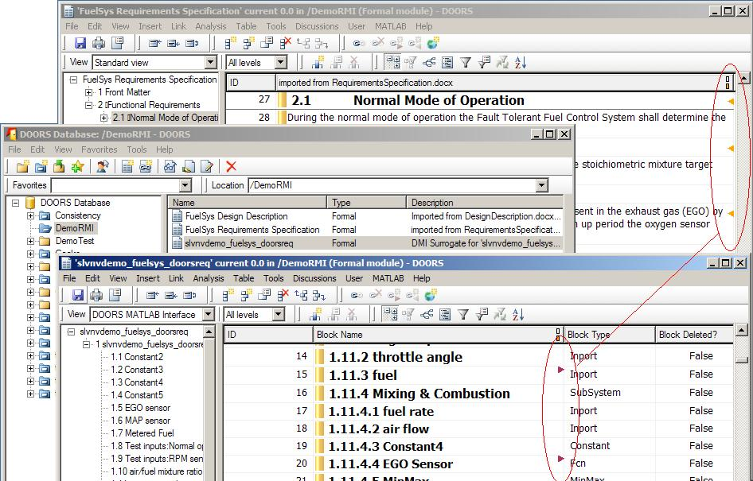
Try navigating from the extracted surrogate module to the corresponding object in Simulink:
- Click 1.11.4.1 fuel rate in the slvnvdemo_fuelsys_doorsreq surrogate module.
- In main menu of the module window, click MATLAB > Select Item. A correct subsystem diagram opens and the corresponding input is highlighted.
Navigation from Simulink objects to the surrogate module is broken, because the extracted modules have new numeric IDs in your DOORS database, trying to navigate DOORS Surrogate Item link on any object will produce an error.
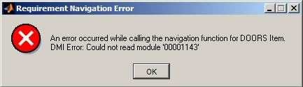
To repair DOORS Surrogate Item links on all objects in the slvnvnvdemo_fuelsys_doorsreq model after you have successfully restored the DemoRMI project, resynchronize the Simulink model with the restored instance of the surrogate.
- In the model window, select Tools > Requirements > Synchronize with DOORS to open a the Synchronization Settings dialog box.
- Enter the following settings, using the correct DOORS path for in the DOORS surrogate module path and name input field, depending on the location of the restored project, or simply make it a current project in DOORS and use "./" notation: enter "./slvnvdemo_fuelsys_doorsreq".
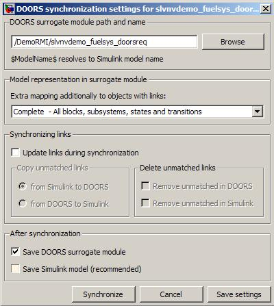
- Do not enable the Save Simulink model checkbox at the bottom, you will not be able to save changes to demo model unless you use a writable copy.
- Simulink might warn you about the previous synchronization path. Click Continue to proceed with the new path. You may get the following message in the command window: "No update needed for the surrogate module". Your restored surrogate module is correct as is.
- Retry navigation from any object in the model to corresponding DOORS object in the surrogate module by selecting Requirements > DOORS Surrogate Item on the context menu for that Simulink object. This should now highlight the corresponding DOORS item in the surrogate module.
Using Model Advisor for RMI Consistency Checking
The demo model comes with some pre-existing links to DOORS document, FuelSys Design Description module. Similarly to the original DOORS Surrogate Item links, these links are broken, because the restored copy of the module has a new ID in your local database. For example, right-click the Airflow calculation subsystem in the model and select "1.2.1 Mass Airflow estimation" from the Requirements submenu. This will produce an error message.
We will now fix these links using RMI consistency checking in Model Advisor.
- In model window click Tools > Requirements > Consistency checking to bring up the Model Advisor graphical interface.
- Locate Identify requirement links with missing documents item under Requirements consistency checking and select it with a mouse.
- Click Run This Check button at the top-left of the right-hand panel. Blocks with broken links are listed. You can fix listed inconsistencies one-by-one or you can use Fix All link at the bottom. We will use the Fix All shortcut, because we know that all broken links need to be redirected to the same restored copy of the original module.
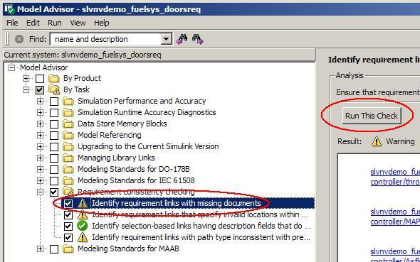
- Click Fix All link at the bottom - DOORS database browser comes up.
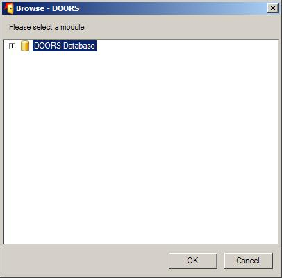
- Locate the restored FuelSys Design Description module in your database and select it with a mouse.
- Click OK to close DOORS database browser.
- Click Run This Check again. The check should now pass.
- Re-try navigation: right-click the Airflow calculation subsystem in the model and select "1.2.1 Mass Airflow estimation" from the Requirements submenu. This will now highlight the correct object in one of the DOORS modules you restored from the included archive.
Copying Link Information from Simulink to DOORS
Now that your direct links from Simulink to DOORS are correct, you can use synchronization to copy link information into the DOORS database. Links will be duplicated in the DOORS project, where you can use native DOORS navigation, analysis and reporting tools. These links between the surrogate and other DOORS modules can even be reused with a new copy of the model.
- Re-open Tools > Requirements > Synchronize with DOORS dialog and configure the following settings:
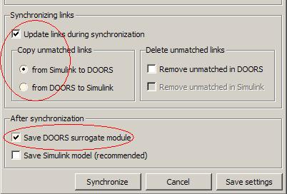
- Make sure to disable the Remove unmatched in DOORS checkbox, because there are unmatched links in the restored project that you need later.
- Click Synchronize button at the bottom.
- Give it a couple of seconds and check the surrogate module in DOORS. It should now display more links - some that existed in the original restored project (links to the FuelSys Requirements Specification module), and some that were just copied from Simulink (links to the FuelSys Design Description module).
- Locate the Airflow calculation subsystem
- Navigate to the corresponding surrogate object using the Requirements > DOORS Surrogate Item on the context menu for this block.
- The new red triangle shows an outgoing link for 1.12.5 Airflow calculation item in DOORS. Right-click to navigate this DOORS link - this brings you to item 1.2.1 Mass airflow estimation in the FuelSys Design Description module.
Copying Link Information from DOORS to Simulink
Synchronization via surrogate module provides a convenient way to propagate system requirements updates in DOORS to corresponding Simulink implementation elements. To demonstrate this workflow, the restored project contains DOORS links from the surrogate module to the FuelSys Requirements Specifications DOORS module that are not present in the Simulink model. For example,
- Use DOORS to navigate from 2.1 Normal Mode of Operation in the FuelSys Requirements Specification module back to the "1.11.3 fuel" item in the surrogate module.
- Use MATLAB > Select Item in the surrogate module main menu to locate the corresponding source object in Simulink model.
- Right-click the located fuel input element in simulink and check Requirements in the context menu. DOORS Surrogate Item is the only available link: there are no links to documents.
To copy link information from DOORS to Simulink, re-synchronize with Update links during synchronization enabled, and select from DOORS to Simulink.
- Re-open the Tools > Requirements > Synchronize with DOORS dialog.
- Configure the following synchronization options:
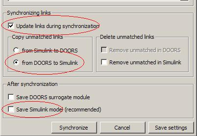
It is now OK to enable Remove unmatched in Simulink checkbox. After the previous synchronization step, there are no unmatched links in Simulink.
Note that the demo model is not writable, so leave the Save Simulink model checkbox at the bottom should be unchecked.
Keep some diagrams open and highlighted to visualize changes when new links are added in Simulink. Note that only the fuel rate controller is highlighted in the root diagram.
- Click Synchronize. The surrogate module window may come up to the front, but there are no red markers, because there are no changes in DOORS.
- Check the familiar fuel input. in Simulink. Right-click and expand the Requirements section of the context menu. Notice the new link below the DOORS Surrogate Item link: "->2.1 Normal Mode of Operation". The arrow prefix indicates that this requirement was not created in Simulink but copied from DOORS.
- Click the new link to navigate to the corresponding requirement in DOORS - 2.1 Normal Mode of Operation section opens in FuelSys Requirements Specification module.
Review your Changes Using User Tags
You now apply the user tag filter to confirm the changes you made to the model. All DOORS requirements that existed in the original version of the demo model were tagged "design". You now use this fact to selectively highlight or hide these links:
- Make sure fuel rate controller subsystem is open and requirements are highlighted.
- Open the Tools > Requirements > Settings dialog to the Filters tab and configure as shown below.
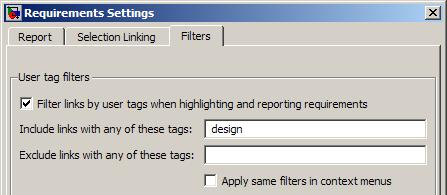
- Check the highlighted objects in diagrams. These are the links that existed in the original model.
- Now modify the Filters settings as shown below to exclude "design" links:
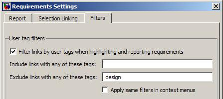
- Check the Simulink model. The highlighting now points to links you have just copied from DOORS database.
Removing Links in Simulink and DOORS
Synchronization also allows you to maintain consistency when links are removed. For example:
- Locate again the fuel input.
- Right-click, select Requirements > Edit/Add links.
- Select the "->2.1 Normal Mode of Operation" item in the listbox with a mouse
- Click Delete button to remove the item from the list.
- Click OK to apply the changes.
- Check the context menu again to confirm that the link is gone.
- Note that the link is still present in DOORS, connecting 1.11.3 fuel in the surrogate module to "2.1 Normal Mode of Operation" in the FuelSys Requirements Specification module.
- Purge the removed link from DOORS by re-running synchronization with link updates option set to Simulink to DOORS and the Remove unmatched in DOORS checkbox enabled.
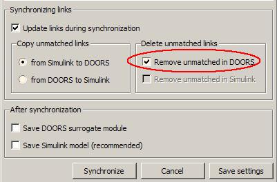
- Click Synchronize. Observe the link in DOORS disappear.
Similarly, when links are removed in DOORS and you need to propagate the changes to Simulink, rerun synchronization with the DOORS to Simulink option selected and Remove unmatched in Simulink checkbox enabled.
Optional Direct Links from DOORS to Simulink
When using selection linking with DOORS, you have an option to automatically insert reference objects into DOORS documents to enable direct navigation from DOORS to Simulink without the need for the surrogate module.
WARNING: The DOORS document is modified when you use this feature of RMI.
- Open the Selection Linking tab in Tools > Requirements > Settings dialog.
- Enable the Modify documents to insert links to models checkbox.
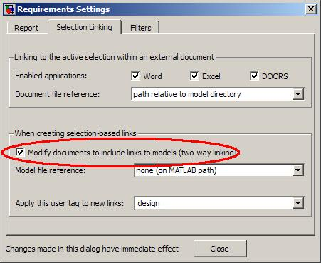
Now, when you use selection linking, Simulink creates navigation objects.
- Select "2.2.6 Speed Sensor Failure" in FuelSys Requirements Specification module.
- Locate the Speed Estimate,
- Right-click and expand the Requirements section of the context menu.
- Click Add link to current DOORS object.
- Observe the new object inserted as the first child of the target object in DOORS.
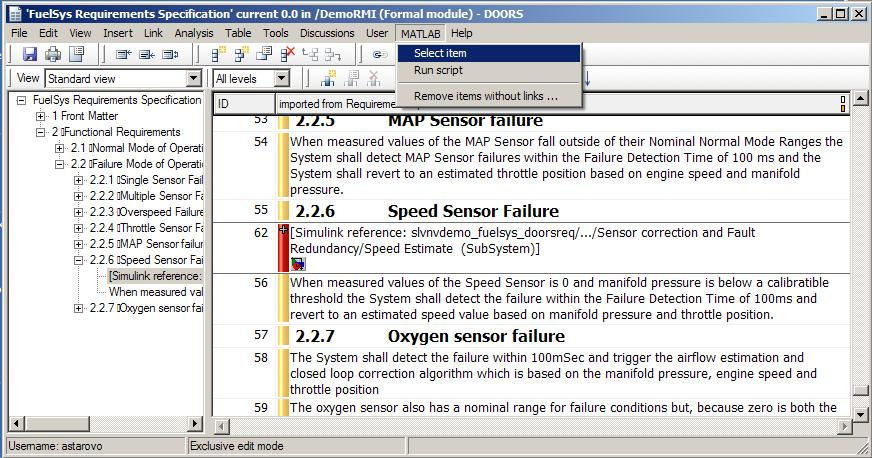
- Close all Simulink model windows, answer "No" when prompted to save the changes. You do not want to modify the original demo.
- Click the just inserted navigation object in DOORS.
- Use MATLAB > Select Item from the main menu of the FuelSys Requirements Specification module. The correct diagram opens in Simulink and the linked block is highlighted.
Note: You have just enabled navigation from DOORS to Simulink model without needing to save any changes in the model. Consider this workflow when modifications to models need to be avoided.
Normally, when the Simulink model is saved after creating links, two-way navigation is possible while bypassing the complexity of surrogate synchronization process. However, there is the disadvantage of cluttering DOORS documents with Simulink navigation objects.
To avoid making unintentional modifications to your DOORS documents, re-open the Tools > Requirements > Settings dialog to the Selection Linking tab and disable Modify documents to insert links to models checkbox.